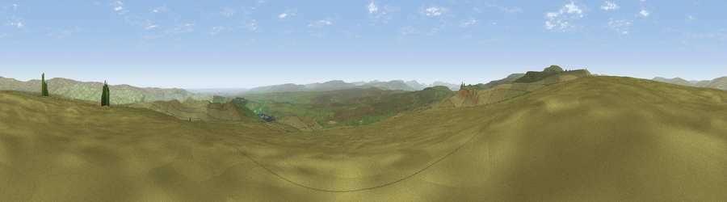

Viewpoint near Newbiggin
#7598 in England · top 15% of its area beats it · near NewbigginWhere it is
The exact computed spot (NY 87775 24175). Click the marker for map links.
The view, rendered

A 360° render of this exact spot computed from the terrain model, tree cover and land cover — summer colours, afternoon light, calibrated against photographs of famous viewpoints. Real trees, hedges and buildings will differ in detail.
The panorama
Grey silhouette: terrain skyline in each direction (720 bearings, Earth curvature and refraction included). Dashed green: skyline with trees (+15 m) and buildings (+8 m) as obstacles. Blue strip: how far the ground is visible on each bearing.
Where the view opens
Wedge length = distance to the farthest visible ground on that bearing (vegetation-aware). Rings at 10, 25 and 50 km.
What fills the view
97% grassland · 1% woodland ·
Angular shares of the visible panorama (visual magnitude), not map area. Landscape diversity 0.07 (0–1 Shannon).
Key numbers
More beautiful places nearby
The staircase of upgrades: each row has a higher view potential than everything closer. Driving times are estimates from straight-line distance, calibrated against real road routing — check an actual route before setting out.
| Place | Direction | Drive | Score |
|---|---|---|---|
| Standards | SW · 2 km | ~6 min | 69.4 |
| Viewpoint c10501_7697 | WNW · 3 km | ~7 min | 70.9 |
| Viewpoint c10490_7651 | W · 5 km | ~11 min | 74.4 |
| Mickle Fell | W · 7 km | ~15 min | 75.8 |
| Viewpoint near Eggleston | E · 14 km | ~25 min | 76.0 |
| Great Dun Fell | WNW · 19 km | ~32 min | 77.8 |
| Little Dun Fell | WNW · 19 km | ~33 min | 78.4 |
| Cross Fell | WNW · 22 km | ~36 min | 78.7 |
54.61258, -2.19080 · source: screening · position refined by local search. Computed location — check access rights before visiting.